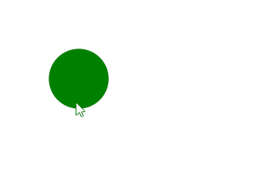

4. Plus sur les images¶
Rappel
Une image s’insert avec la balise orpheline <img src="image.jpg" alt="Une image">.
Notez l’attribut alt (pour “alternative”) qui permet de donner une description de l’image qui sera affichée dans le cas où l’image n’apparaît pas correctement dans le navigateur. Cet attribut est obligatoire pour que les robots des moteurs de recherche considère votre code comme conforme et fassent un bon référencement de votre site.
Voici un exemple qui spécifie l’attribut alt:
<p>
Voici une très belle photo de mes dernières vacances.<br>
<img src="images/plage.jpg" alt="Photo de plage vue du dessus" />
</p>
Et les non-voyants sur le web ?
Quand ils surfent sur le web, les personnes non-voyantes utilisent des logiciels qui leur lisent le contenu des pages. Dans cette situation, vous réalisez l’importance de donner une courte description de vos images avec l’attribut alt, afin que le synthétiseur vocal puisse décrire l’image à la personne.
Rassembler ses images¶
Il est fortement conseillé de rassembler les images de votre site dans un dossier images afin d’éviter de les mélanger avec les fichiers .html.
Exercice 1
Si ce n’est pas déjà fait, reprenez le dossier ArtGallerie de l’exercice récapitulatif du chapitre précédent et créez un dossier images pour y placer toutes vos images. Bien entendu, il vous faut ensuite modifier les sources des images dans le code.
Ajoutez également l’attribut alt pour chaque image.
Solution
Vos liens doivent maintenant ressembler à ça:
<img src="images/photo1.jpg" alt="Image montrant un gratte-ciel">
Attention
Évitez à tout prix les accents, majuscules et espaces dans vos noms de fichiers et de dossiers. Par exemple, voici un chemin qui va poser problème: Images du site/Image toute bête.jpg.
Il est courant de remplacer les espaces par des tirets bas (underscore) _. Idéalement, le chemin devrait donc plutôt ressembler à images_du_site/image_toute_bete.jpg.
Changer la taille des images¶
Les 2 attributs permettant de modifier la taille d’une image sont width (pour largeur) et height (pour hauteur).
<img src="images/photo1.jpg" alt="Image montrant un gratte-ciel" width="500" height="600">
Attention
Si vous précisez une largeur et une hauteur qui ne correspondent pas aux proportions originales de l’image, elle s’en trouvera déformée. Pour éviter ça, vous pouvez donner uniquement l’une des deux dimensions, et l’autre sera calculée automatiquement pour garder les proportions originales.
Exercice 2
Voici une photo en ligne de la place d’ecublens: photo.
Ouvrez un fichier .html et intégrez cette image dans sa taille originale.
Vous pouvez le faire directement sur w3schools.
{kind=link}
Quelle est la taille de l’image originale ?
Intégrez ensuite sur la même page des versions modifiées avec les tailles suivantes:
largeur de 500 pixels
hauteur de 300 pixels
largeur de 150 pixels et hauteur de 200 pixels
Solution
L’image originale a les dimensions suivantes: 2560 x 1707 (ce qui est bien trop grand pour être affichée telle quelle sur une page web).
<img src="https://ecublens-plage.ch/wp-content/uploads/2022/07/IMG_6854-Edit-scaled.jpg" alt="Plage d'ecublens">
<img src="https://ecublens-plage.ch/wp-content/uploads/2022/07/IMG_6854-Edit-scaled.jpg" alt="Plage d'ecublens" width="500">
<img src="https://ecublens-plage.ch/wp-content/uploads/2022/07/IMG_6854-Edit-scaled.jpg" alt="Plage d'ecublens" height="300">
<img src="https://ecublens-plage.ch/wp-content/uploads/2022/07/IMG_6854-Edit-scaled.jpg" alt="Plage d'ecublens" width="150" height="200">
Idéalement, les images devraient être redimensionnées à l’avance par vos soins afin que ça ne soit pas le travail du navigateur.
Ajouter une infobulle¶
Vous avez sûrement déjà vu des images sur lesquelles, quand vous laissez le curseur une seconde, un petit texte apparaît.
Afin d’afficher une bulle d’aide (infobulle) sur vos images, vous pouvez utiliser l’attribut title suivi d’un = et du texte que vous voulez afficher entre " "; (à ne pas confondre avec la balise title qui permet d’indiquer au navigateur le titre d’une page web).
Exercice 3
Reprenez le code de l’exercice précédent montrant une page d’ecublens et ajoutez une bulle d’aide.
Solution
<img src="https://ecublens-plage.ch/wp-content/uploads/2022/07/IMG_6854-Edit-scaled.jpg" alt="Plage d'ecublens" height="300" title="Un ptit verre après le boulot ?">
Des infobulles partout
L’attribut title n’est pas réservé à la balise <img>. Il est par exemple également possible d’ajouter l’attribut title à des liens (<a> </a>) ou des paragraphes (<p> </p>).
Une image cliquable¶
Il est tout à fait possible de transformer une image en lien. Pour ceci, il suffit de mettre une image entre les balises <a> </a> au lieu d’un texte.
Voici un exemple:
<a href="https://mdlgb.ch/"><img src="logo.png"></a>
Résumé des balises de ce chapitre¶
Ajouter une alternative à une image:
<img src="image.jpg" alt="Description de l'image">Changer la taille d’une image:
<img src="image.jpg" width="500" height="600">Ajouter une infobulle:
<img src="image.jpg" title="Texte de l'infobulle">Image cliquable:
<a href="https://www.example.com"><img src="image.jpg"></a>
Exercice récapitulatif 4¶
Exercice récapitulatif 4
Votre site d’artiste (ArtGallerie) attire déjà de nombreux clients, mais vous avez maintenant de quoi améliorer votre galerie d’images.
Reprenez votre dossier ArtGallerie du chapitre précédent et faites les améliorations suivantes:
Ajustez les tailles des images de votre galerie pour une meilleure harmonie (les images doivent toutes avoir la même largeur).
Ajoutez des infobulles sur vos images afin de donner des informations sur leur origine aux utilisateurs du site. Par exemple une mini-description de l’oeuvre ou de l’artiste (vous pouvez inventer).
Sur votre page de contact, ajoutez le logo d’instagram. (A télécharger
ici).Faites en sorte que le logo redirige directement vers le réseau social si on clique dessus.
{kind=link}
Déposez le dossier compressé (ArtGallerie.zip) sur Moodle à l’endroit prévu.